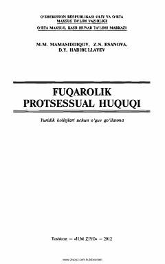

FPFuqarolik protsessual huquqi fanining nazariy va amaliy asoslarini o'rgatuvchi o'quv qo'llanma.
Mazkur o'quv qo'llanma fuqarolik protsessual huquqining Umumiy va Maxsus qismiga oid barcha masalalar, huquqshunos olimlarning ilmiy-nazariy fikrlari va sud amaliyotidan misollarni o'z ichiga oladi. Kitobda fuqarolik sud ishlarini yuritish turlari, isbotlash va dalillar, da'vo qo'zg'atish hamda sud qarorlarini ijro etish tartiblari batafsil yoritilgan. Asar yuridik kollejlari o'quvchilari, talabalar va huquqshunoslikka qiziquvchilar uchun mo'ljallangan.